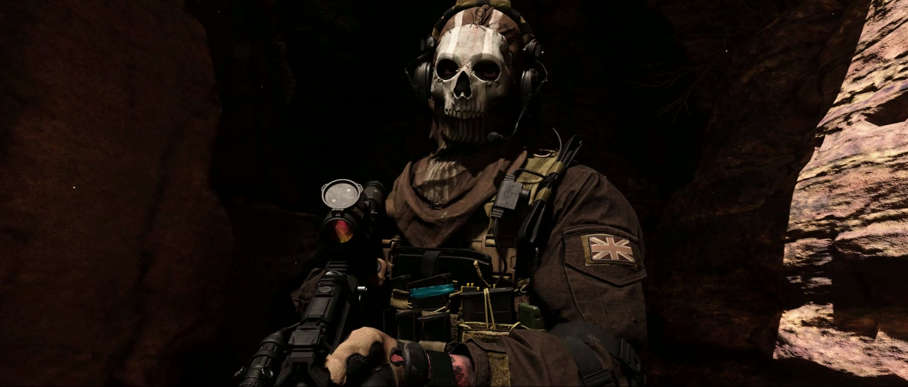
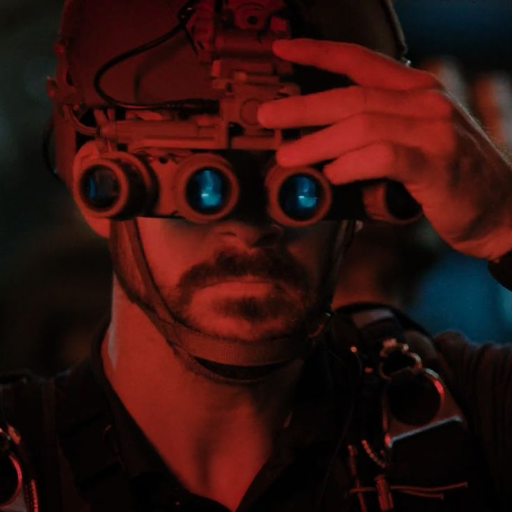

Skip to content
ocean’s
Choose a collection

Ocean’s scenepacks
01
Call of Duty
Price, Gaz, Ghost, Soap, Valeria, The Archer
02
SIX
Seasons 1–2

Modern Warfare I–III and MW4
Scene packs · 22 MW4 cutscenes